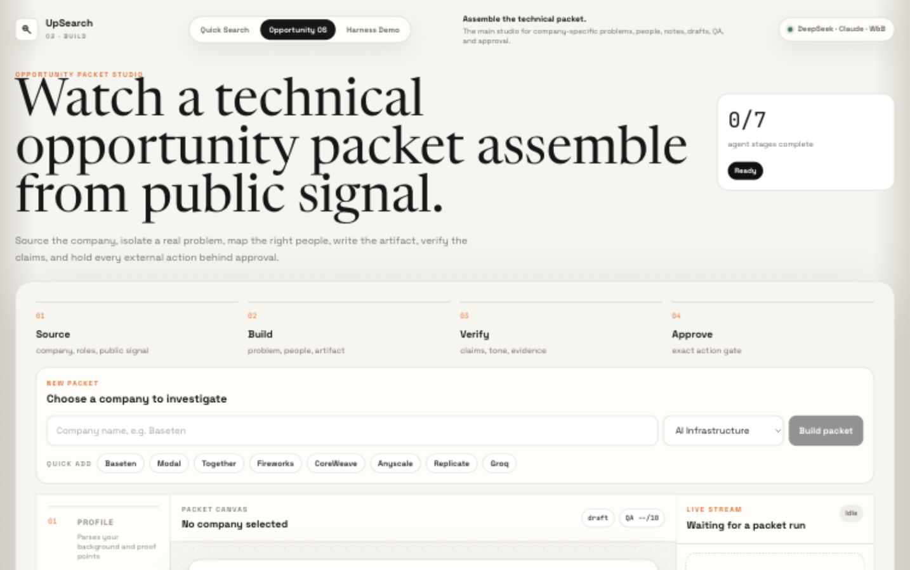

Given as little information as possible, UpSearch builds a company-specific packet that helps an early-career technical person start authentic, high-quality technical conversations instead of sending more generic applications.
The product is not another Indeed, LinkedIn, or mass application workflow.
Company, people, open problem, one-page artifact, draft, QA, approval.
Recommend outputs first. Ask the user only at meaningful decision points.
External actions stay behind approval: send, schedule, connect, or message.
The first version should keep the workflow disciplined: source the opportunity, learn the problem, write the artifact, map adjacent proof, then choose a cold reach medium.
Find founders, FDEs, engineers, researchers, recruiters, authors, and mutual paths.
Use company blogs, jobs, docs, GitHub, papers, Hacker News, Reddit, and LinkedIn posts.
Explain the problem, current landscape, possible contribution, and success criteria.
Use the closest project or skill, even if the user has not done that exact team problem before.
Student voice, no hype, no weird wording, clear ask, external action only after approval.
Claude Code and Codex work because the model has a workspace, tools, state, tests, diffs, artifacts, retries, and a definition of done. UpSearch needs that same pattern for opportunity work.
This is the core reliability move from the PDF: every agent is a configured task environment, not a loose prompt.
Company and problem discovery.
Web, company blogs, jobs, HN, Reddit, papers, GitHub.
Source exists, date valid, deduped, citation stored.
Map relevant humans.
LinkedIn/browser, author pages, GitHub, papers.
Person matches company, role relevant, URL verified.
Build the artifact.
Sources, papers, proof bank, current technical landscape.
No fake claims, concrete contribution, source-backed.
Draft the ask.
Draft templates, word counter, tone rules.
Under 200 words, specific opener, exact ask.
Execute only when approved.
Gmail, LinkedIn, browser/API, manual handoff.
Exact approval match before send or schedule.
Keep momentum.
Hermes, W&B/local ledger, follow-up queue.
Due follow-ups, blocked decisions, completed work.
Start with AI infrastructure and inference. Use cheap models for broad extraction, stronger models for final synthesis and QA, deterministic code for tracking, and replaceable connectors for external actions.
Use DeepSeek, Qwen, or GPT-mini-style models for high-token source extraction and summaries.
Reserve stronger models for final one-pagers, ranking, and claim audits.
Browser automation is a replaceable connector. Tandem, Chrome, Codex browser, or manual handoff can swap in.
Agents communicate through schemas, artifacts, validators, and a ledger, not vague chat between agents.

JSON repair, citation checks, and fail-loud validators.
Track agent, model, cost, source URLs, artifacts, and approval status.
Queue scheduled sourcing and batched problem discovery workers.
Create drafts, schedule follow-ups, and execute only approved actions.